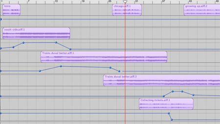

Ryan described his hardware setup for podcasting a while back. With at least a few dozen podcasts under his belt, he’s got his system down.
I wanted to write a little about the process I used to create the Trains podcast. Not because I think it will be particularly helpful to newcomers, but just because I think it’s interesting. (Actually, I’m just now getting around to posting this. Months have past since I wrote it, and now Ryan spends his time writing about why none of this matters, and he’s right: tools should be accessible to non-technical beginners.)
I started by borrowing a good mic from a friend. Eventually he will want it back, but luckily for me he’s a great musician and has a bunch of microphones that he uses regularly. It’s from audio-technica.
I had a few choices for recording audio. I own a Griffin iMic, but decided not to record directly into the computer this time, so it went unused. Some of the recordings I planned to do would be away from a computer, so I needed something mobile.
A great choice for this might have been a Rio, or a MiniDisc. I was a MiniDisc fan back during the first-generation of the devices, but sold it years ago. And I’m a happy iPod owner, so buying yet another MP3 player didn’t make sense. My concern is that the moment I do that, Apple will release a software update to uncripple the voice recording in the iPod.
For the train conductor recording near the beginning of the podcast, I used a Griffin iTalk connected to an iPod. This is all the electronics I took with me on the train to Chicago. I ended up recording a lot with it, without an external mic at all, but not much of the audio was really usable.
The opening train sounds I recorded just a short distance from my house. I biked down to the crossing with my nice microphone and recorded directly into a digital video camera, on to MiniDV tape. This turned out to work so well that I recorded all my voice this way.
Since it was DV, I used iMovie to import clips of all the voice work. I could have exported to AIFF from there (and did try to), but because I was sampling lots of other material, I decided to be consistent and use Audio Hijack to grab the audio directly as it played from iMovie. I also used Audio Hijack to rip from a RealAudio source, iTunes music, and from DVD Player.
Once I had all the AIFF files, I simply dragged them onto the timeline in GarageBand to create new tracks. I had planned to use Audacity, but it turns out GarageBand does everything I needed. I was raised on SoundEdit Pro, and the clunkiness of Audacity by comparison is hard to deal with. Controlling the fade in and out of audio for different clips was super easy in Garage Band.

And then I exported to iTunes, converted to MP3, and posted to the site. Power to the people!